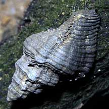
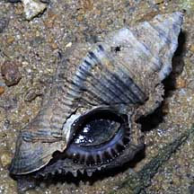
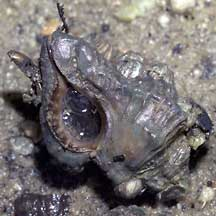
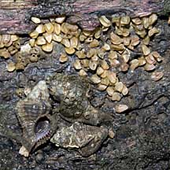
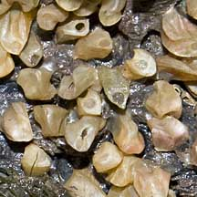

|
|
| shelled snails text index | photo index |
| Phylum Mollusca > Class Gastropoda > Family Muricidae |
| Mangrove
murex Chicoreus capucinus Family Muricidae updated Aug 2020 Where seen? This large and rather elaborately textured drill is sometimes seen on mangrove trees. Feeding on the barnacles growing on mangrove trunks and other hard surfaces in mangroves. It is also called 'Ketem' in Malay. Features: 4-5cm, up to 9cm long. Shell thick with sculptured ridges down the length. The shell, however, is often hidden by encrusting plants and animals such as barnacles. Shell opening circular with 'teeth' on the inner edge. Long siphonal canal. Operculum dark. |
 Pasir Ris Park, Oct 09 |
 Pasir Ris Park, Oct 09 |
 Sungei Buloh, Mar 05 |
| What does it eat? It eats a wide variety of prey from barnacles, nest-building mussels to snails and clams hiding in the mud and worms in rotten wood. They are such voracious predators, that they exert a considerable influence over the kind of community of animals that are found where they are live. |
|
 Kranji Nature Trail, Feb 11 |
 Egg capsules? |
| Mangrove murex on Singapore shores |
On wildsingapore
flickr
|
Links
References
|